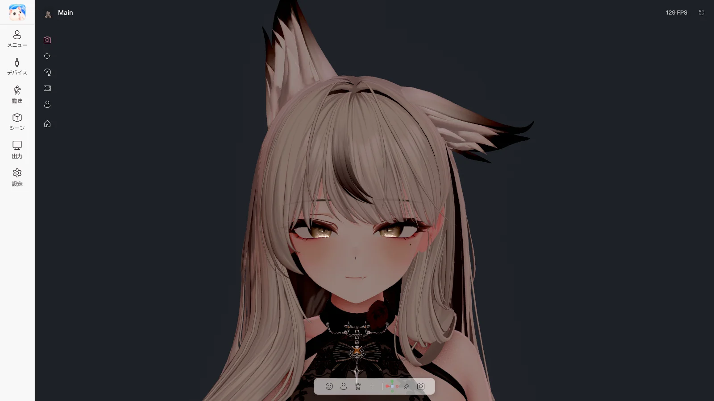
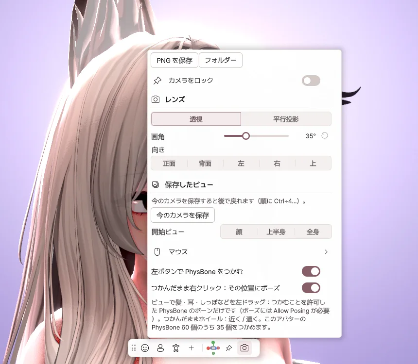

4. メイン画面

左のメニュー
| メニュー | 内容 |
|---|---|
| メニュー | アバターの Expression メニューとジェスチャー → 5章 |
| デバイス | Web カメラ、マイク、トラッキング → 6章 |
| 動き | 顔、体、手 → 7章 |
| シーン | 背景、ライティング、エフェクト → 8章 |
| 出力 | 配信ソフトへの出力、画面共有 → 9章 |
| 設定 | ウィンドウ、パフォーマンス、言語、ショートカット → 10章 |
パネル右上の ピン を押すと、パネルが固定されます。
上部
| 項目 | 内容 |
|---|---|
| アバター名 | アバターを切り替えます。 |
| FPS | 押すとフレームレートを変更できます。 |
| ⟲ | ポーズが固まったり髪が絡まったりしたときに押すと、最初の状態に戻ります。 |
下部のツールバー
| ボタン | 内容 |
|---|---|
| 顔・上半身・全身 | カメラの構図を切り替えます。 |
| + | 今のカメラ位置を保存します。 |
| カメラをロック | マウスでカメラが動かないようにします。 |
| カメラ | カメラの設定を開きます。 |

- PNG を保存 — メニューなしで、画面を写真として保存します。
- 画角 — レンズを広く、または狭くします。
- 保存したビュー — 保存したカメラ位置にすぐ移動します。
- PhysBone をつかむ — 髪やしっぽを、マウスでつかめるようにします。
マウスとキーボード
| 操作 | 内容 |
|---|---|
| 右ドラッグ | カメラを回転 |
| ホイールドラッグ | カメラを移動 |
| ホイール | 拡大・縮小 |
| F1 | メニューを隠す / 表示する |
| Ctrl + 1 / 2 / 3 | 顔 / 上半身 / 全身 |
| Ctrl + Z | アバターの位置を元に戻す |
PhysBone をつかむ
ビューで髪、耳、しっぽを 左ドラッグ すると、引っ張ることができます。つかんだまま 右クリック するとその形のまま固定され、同じ部分をもう一度つかむと解除されます。
アバターの位置を変える
ビュー左側の 移動・回転・大きさ ツールで、アバターを動かしたり回したりします。⌂ を押すと中央に戻ります。
ウィンドウとトレイ
ウィンドウの X を押すとトレイに最小化され、トラッキングと出力は動き続けます。トレイアイコンをダブルクリックすると、また開きます。